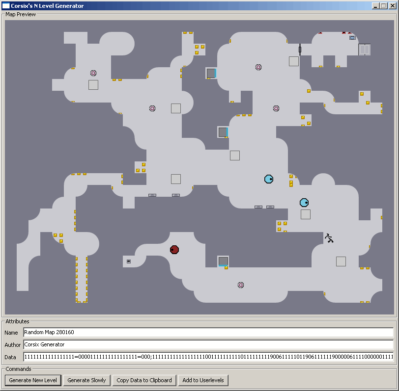

Interesting concept, needs some refining though
I thought it about time that LV's generator got some decent competition 
Download: http://www.corsix.org/NLevGen.zip (includes full source code for people paranoid about running random EXE files off the internet or if you want to change stuff)
Usage:
Extract all files from the zip. Run NLevGen.exe. Press "Generate New Level" or "Generate Slowly" (to watch it build the map up bit by bit)
Samples:
Italian Postcard
Rough Boy
Modding it:
The pretty front end is written in C++, with source code in the src folder. The actual level generator is a collection of text files in the lua folder. Have a poke around these if you want to modify the algorithm. Unless you want to add buttons to the interface or change the preview renderer, there shouldn't be any need to touch the C++.

Download: http://www.corsix.org/NLevGen.zip (includes full source code for people paranoid about running random EXE files off the internet or if you want to change stuff)
Usage:
Extract all files from the zip. Run NLevGen.exe. Press "Generate New Level" or "Generate Slowly" (to watch it build the map up bit by bit)
Samples:
Italian Postcard
Rough Boy
Modding it:
The pretty front end is written in C++, with source code in the src folder. The actual level generator is a collection of text files in the lua folder. Have a poke around these if you want to modify the algorithm. Unless you want to add buttons to the interface or change the preview renderer, there shouldn't be any need to touch the C++.
Can you describe how the gold should be placed?
5% random z snap
5% random c snap
5% random x snap
10% random z snap clusters
20% random c snap clusters
25% random x snap clusters
25% random c and x snap clusters
That means nothing to me
What is z snap, how does it relate to gold? What is c snap? etc.
Are there are maps on NUMA which effectively show what you want?
Are there are maps on NUMA which effectively show what you want?